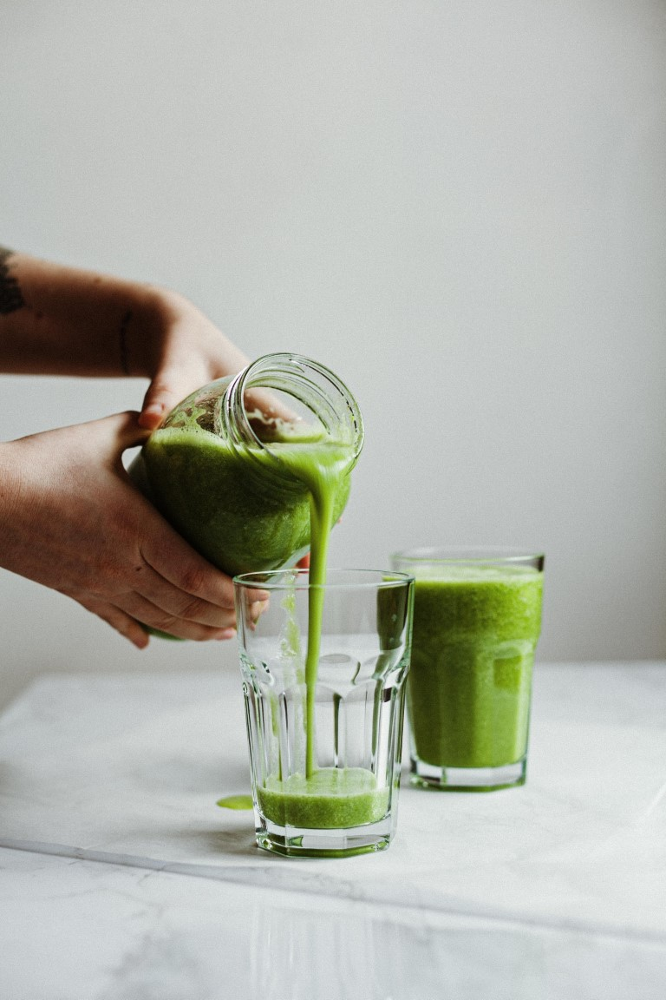

En términos simples, podemos decir que un estilo de vida pleno es aquel que minimiza la toxicidad y apoya los mecanismos de desintoxicación del cuerpo; físicos, mentales, emocionales y espirituales.
La persona promedio en una ciudad moderna tiene un grado alto de carga tóxica. Es decir, toxinas (endógenas y exógenas) que el cuerpo no es capaz de someter al proceso de detoxificación y, por lo tanto, circulan en el torrente sanguíneo. Lo hacen hasta que se alojan en el tejido, en su mayoría tejido adiposo, o el cuerpo los rodea con mucosidad para amortiguar su toxicidad. Hay dos cosas principales que puede hacer para "limpiarlo":
Evitar las toxinas (cualquier químico hecho por el hombre que agreguemos a los alimentos o productos similares a los alimentos). Comer productos orgánicos si es posible y evitar las "cosas" comestibles en cajas, bolsas, tubos, frascos o botellas. Comer muchas verduras, frutas y buena proteína. Evitar gluten, lácteos, azúcar, café y alcohol
Comer menos cantidad y con menos frecuencia. Sustituir comidas sólidas por comidas líquidas disminuirá el trabajo de digestión, permitiendo una mejor desintoxicación/reparación. El ayuno intermitente es la mejor práctica para esto. Hay tantas prácticas de estilo de vida que son muy beneficiosas, rutinas que se pueden incluir. El ayuno intermitente, por ejemplo, se vuelve más fácil en el verano, cuando uno no tiene tanta hambre porque hace más calor. La exposición deliberada al frío es una práctica increíble por muchas razones. Ayuda a convertir la grasa amarilla en grasa marrón, una forma más saludable. Reduce la inflamación, fortalece el sistema inmunológico y la lista sigue y sigue. Por otro lado, la meditación es una de las prácticas más simples (aunque a veces no tan fáciles) que puede tener para la desintoxicación en particular y el bienestar en general.
Si estás haciendo un programa de detox, lo mejor es hacer ejercicio ligero. No querrás gastar toda tu energía en ejercicio, lo que hace que el proceso de desintoxicación sea más lento. Pero si solo querés estar bien y mantenerse bien, el ejercicio es esencial. Qué ejercicio y a qué intensidad depende de la edad, los objetivos, el estado de salud y muchos otros factores. El sueño es casi tan importante como el oxígeno. La vida tampoco es posible sin el descanso.
Hay tanta información al respecto que todo lo que pueda decir aquí será repetido e incompleto. Pero lo que puedo decir es que el sueño se vuelve mejor y más profundo cuando el sistema de detoxificación se fortalece y apoya. Este es uno de los comentarios más comunes que recibimos en mi práctica médica y de nuestros clientes que realizan el programa Clean.